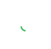

<section id="garden">
  <div class="container">
    <div>
      <app-plant-search
        *ngIf="showSearchModal"
        (addPlantToGridEvent)="addPlantToGrid($event)"
        (addImageToGridEvent)="addImageToGrid($event)"
        (toggleSearchModalEvent)="toggleSearchModal()"

      ></app-plant-search>
    </div>

    <section id="gridSection">
      <button id="addPlot" (click)="onAddHandler()">
        <i class="fas fa-plus-square fa-3x grow"></i>
      </button>
      <gridster [options]="options">
        <gridster-item
          [item]="item"
          *ngFor="let item of gardenGrid; index as i"
        >
          <button

            *ngIf="!item.plant"

            id="searchAdd"
            (click)="[toggleSearchModal(), addClickedIndex(i)]"
            (touchstart)="toggleSearchModal()"
          >

            <i class="fas fa-search-plus fa-lg"></i>

          </button>
          <div class="plant">
            <p *ngIf="item.plant">
              {{ item.plant.common_name }}
            </p>

            
            <!-- <p *ngIf="item.plant.common_name === null">
            {{ item.plant.scientific_name }}
          </p> -->
          </div>

          <button

            id="searchAdd"
            (click)="[toggleSearchModal(), addClickedIndex(i)]"
            (touchstart)="toggleSearchModal()"
          >
            <i class="fas fa-search-plus fa-2x grow"></i>
          </button>
          <button
            id="removePlant"
            (click)="removePlant(i)"
            (touchstart)="removePlant(i)"
          >
            <i class="far fa-trash-alt fa-lg grow"></i>
          </button>
        </gridster-item>
      </gridster>
    </section>
  </div>
</section>



<div class="rotate">
  <p id="rotate">Please Rotate Your Device.</p>
  
</div>
<app-favorites></app-favorites>
